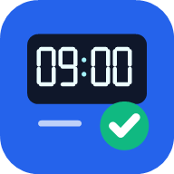
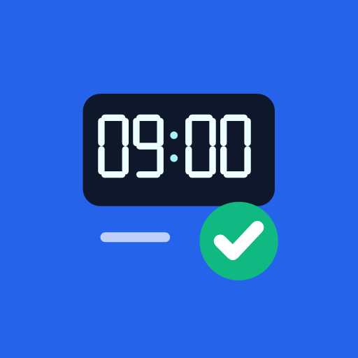

Office Clocking
Proposta separata: timbratore digitale e segno di conferma. Favicon e icone PWA attive non sono state sostituite.


Proposta separata: timbratore digitale e segno di conferma. Favicon e icone PWA attive non sono state sostituite.

